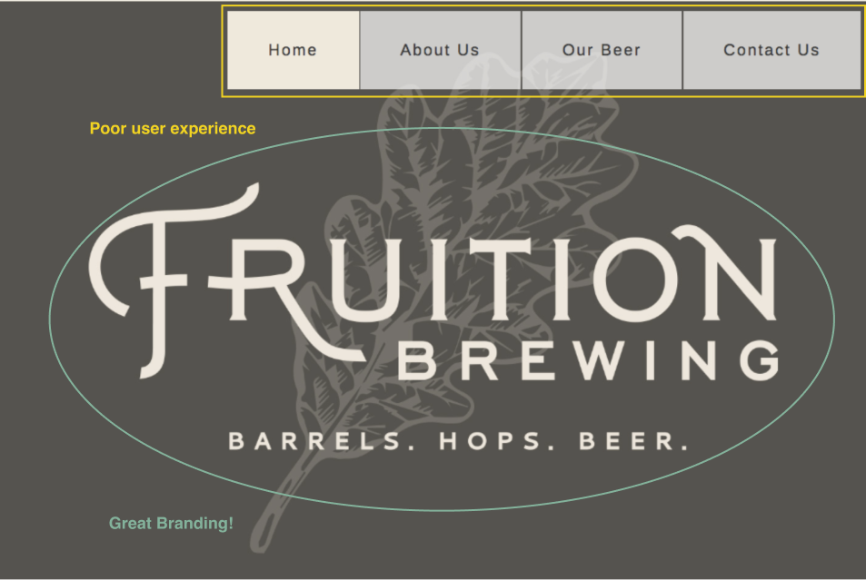

Surveys - Site audit
The goal of this first survey was to have users explore the site as it was and understand what they like and didn’t like.

~70% of the people surveyed like the current \ing and imagery
~80% of people didn't like the content or usability
~82% of people said the Home section or the About section are the most important on the site
~87% of people surveyed were casual or semi-frequent beer drinkers
~80% of people surveyed considered themselves craft beer lovers or beer adventurers
~65% of people surveyed cared where the ingredients used to make the beer they drank came from
~80% of people surveyed knew little to an average amount about the brewing process
Surveys - Potential customers
The goal of this second survey was to get a pulse on Fruition’s potential customers. What beer brands they like and why, what beer styles they are into, and how much do they know about the beer brewing process. Logo, layout and ease of use seemed like the most important aspects of beer websites that people liked.
Competitive Analysis
Who is the competition? How can Fruition differentiate themselves? How can they make their brand more appealing than other breweries through the content on their website? In all their competitors I didn’t feel like they did a good job of telling their story, why they started brewing beer, how they started brewing and the techniques and ingredients they use.
| Weaknesses |
Opportunities |
| - Not a clear story behind the beer- Little mention about the brewing process and philosophy behind the beers being made- Little mention about the ingredients used in their beers and how they source them |
- Tell Fruition’s story better than competitors- Inform consumers about the philosophy behind the beer brewing process at Fruition including the sourcing local ingredients |
| Weaknesses |
| - Not a clear story behind the beer- Little mention about the brewing process and philosophy behind the beers being made- Little mention about the ingredients used in their beers and how they source them |
| Opportunities |
| - Tell Fruition’s story better than competitors- Inform consumers about the philosophy behind the beer brewing process at Fruition including the sourcing local ingredients |
Using the results from the surveys I conducted, coupled with the documentation on demographics and target market provided by the owners of Fruition I developed user personas to help guide the design process.
Monzano G.

Mega Fan | Group Mentality
30 Yo | Operations Manager
Motivations: Is from the mid-west, but lives in the Bay Area and can never find bars that play his favorite college football games.
Goals: find bars that play his favorite sports teams games; get a more tailored experience from the applications he uses.
Frustrations: Unhappy with search features on apps he currently uses.
Natalia J.

Big Time Fan | Ambiance Seeker
27 Yo | UX Designer
Motivations: Often travels for work and follows her favorite sports team while on the road for business.
Goals: Would like one app with all info regarding sports stats, game times, where to watch etc...
Frustrations: Not being able to find an establishment that plays the game of the sports team shesupports when not in that city and she is often inundated with information she isn’t interested in.
User Stories
Based on the information gathered I started to develop user stories but due to the maturity of Fruition Brewing as a business, I had to scale back what would actually be included in the first version of the site.
| MVP |
See what beers are currently on tap at Fruition Brewing |
| Nice to Have |
Locate where I can get Fruition’s beer at local restaurants |
| Unnecessary |
Become a member of the Fruition Brewing Bottle Club |
| MVP |
| See what beers are currently on tap at Fruition Brewing |
| Nice to Have |
| Locate where I can get Fruition’s beer at local restaurants |
| Unnecessary |
| Become a member of the Fruition Brewing Bottle Club |
User Flows
From the user stories, I developed user flows to help visualize the user's interactions within the site.
Card Sorting
I did a card sorting exercise to better understand how potential users would group various sections on the site and make sure sections of the site were where people expected them to be.
All participants were able to complete the four (4) tasks with a 100% completion rate:
1. Find the details about Fruition’s Pale Ale.
2. Find the current food menu.
3. Locate information about David Purgason the head brewer.
4. Locate the companies email address.
After compiling the results from testing and going through several design critiques I made some much needed revisions to the design.
|
Added an indicator icon so users can more easily see where they are in the site. |
|
I decreased the size of the body text and increased the line height to increase readability. |
|
I decreased the size of the leaf icon page breaks and Changed the sizing and tracking on my headers. |
|
I updated the beer labels which will be consistent with the hover lables on the home screen and made various other small changes... |
I then did some final preference testing to help answer some design decisions I had been unsure about.
I wanted to see if i could add some color to the logo on the landing, but I didn’t want to leave it to assumptions. After preference testing neither design won out so I went with what the clients prefered.
I then tested whether users preferred an email button which opened their default email to contact Fruition or whether they preffered a form in the ‘contact us’ section of the site. Once again opinions were split so I made a choice and consulted with the clients.
The last thing I tested was the timeline infographic in the ‘About Us’ section of the site. I was trying to find a good way to visually show Fruitions history. I tested the three options shown and the Tree infographic won out easily, but after review I decided to leave it out entirely for now because Fruition is still such a young brewery and the information displayed wasn’t very informative.
Sticking to a defined process and moving through focused tasks helped to get the project completed in a timely manner. One of the key things I learned was the importance of documenting my work throughout the process to help show all the design decisions that were made.
This being the first iOS application that I have designed there was definitely a learning curve regarding the use of the HIG. Additionally, I learned that using real content when possible in design mockups helps get better feedback from usability tests because the testable footprint will appear to be 100% functional. I also learned through design critiques from peers, the importance of maintaining consistency throughout the app, even something small like a tweak in opacity can throw the whole design off leading to distrust in the application, company, and brand.